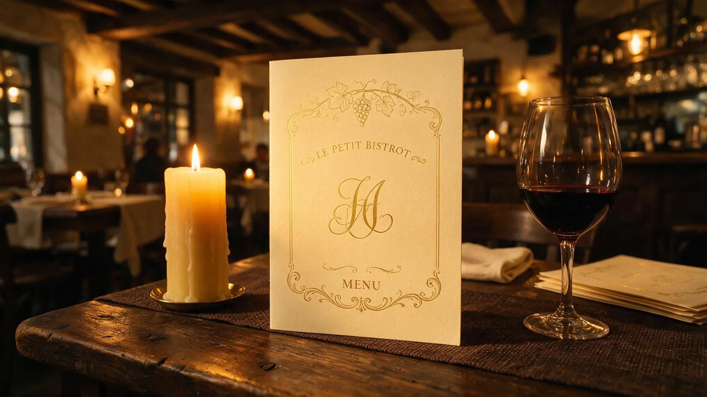
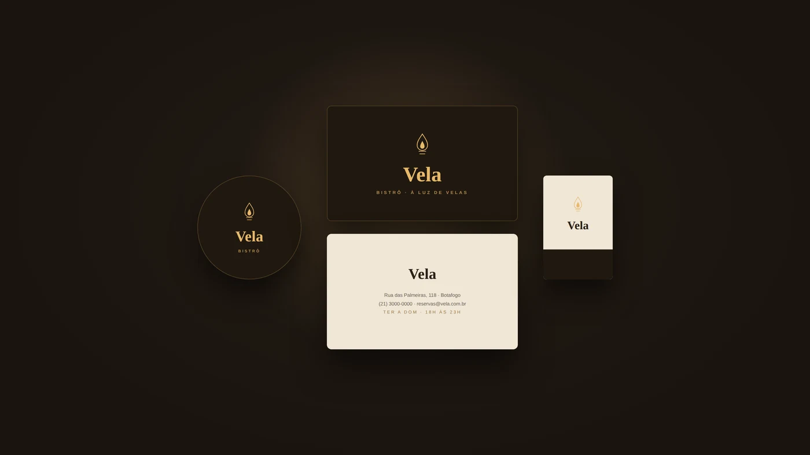

Vela jantar em câmera lenta.

O BRIEFING (INVENTADO)
Um bistrô pequeno de trinta lugares, cozinha aberta até tarde, sem manobrista e sem menu degustação. Cobra bem, mas não é chique de gravata. O briefing pedia uma marca que parecesse cara sem parecer inacessível.
A DIREÇÃO
A luz é o conceito. Todo o sistema nasce da ideia de sala escura com ponto de luz: fundo profundo, dourado pontual e papel creme. O símbolo é uma chama estilizada em traço fino — presente em tudo, do cardápio ao porta-copos, sempre no mesmo tamanho relativo.
O SISTEMA
Wordmark, símbolo, arquitetura de cardápio, cartão em duas faces, porta-copos e caixa de fósforo. Peças que o cliente toca — num restaurante, a marca se prova na mesa, não no Instagram.
PALETA
APLICAÇÕES


AS DECISÕES
Dourado é acento, não fundo
A saída óbvia para "sofisticado" é banhar tudo de dourado, e é exatamente o que faz uma marca parecer barata. Aqui o dourado só aparece no símbolo, no nome e nos títulos de seção. O resto é creme e marrom profundo — o dourado brilha porque é raro.
O cardápio usa pontilhado, não tabela
Coluna de preço alinhada à direita transforma o cardápio em planilha e faz o cliente ler preço antes de prato. A linha pontilhada conduz o olho do nome ao valor, na ordem certa, e é um código que quem janta fora reconhece sem pensar.
Descrição em três ingredientes, no máximo
Prato de bistrô se vende pelo que tem dentro, não por adjetivo. "Manteiga de sálvia, amêndoas e parmesão" diz mais que "irresistível massa artesanal". Limite fixo de caracteres para a descrição não quebrar o ritmo da coluna.
Papelaria em duas versões desde o início
Cartão escuro com dourado para entregar na mesa, cartão claro com dados para quem vai guardar na carteira. Uma marca de restaurante que só funciona no escuro não sobrevive ao primeiro impresso em papel comum.